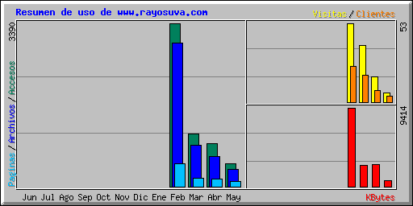

| Resumen por meses | ||||||||||
|---|---|---|---|---|---|---|---|---|---|---|
| Mes | Media diaria | Totales mensuales | ||||||||
| Accesos | Archivos | Paginas | Visitas | Clientes | KBytes | Visitas | Paginas | Archivos | Accesos | |
| May 2002 | 44 | 32 | 10 | 0 | 4 | 705 | 6 | 111 | 360 | 484 |
| Abr 2002 | 34 | 23 | 5 | 0 | 8 | 2687 | 17 | 154 | 622 | 888 |
| Mar 2002 | 37 | 29 | 5 | 1 | 18 | 2537 | 38 | 171 | 854 | 1098 |
| Feb 2002 | 141 | 124 | 20 | 2 | 24 | 9414 | 53 | 482 | 2976 | 3390 |
| Totales | 15343 | 114 | 918 | 4812 | 5860 | |||||
| Generated by Webalizer Version 2.01 |